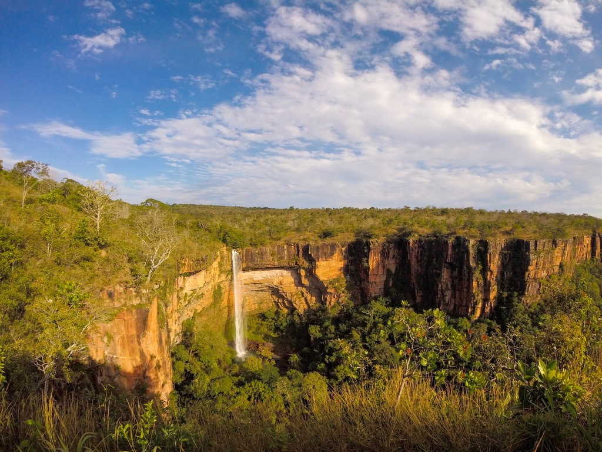

Mato Grosso fica na região Centro-Oeste do Brasil e é um dos maiores estados em área. A capital é Cuiabá. O estado é conhecido por suas vastas áreas naturais, como o Pantanal (uma das maiores áreas alagadas do mundo), a Chapada dos Guimarães e parte da floresta Amazônica no norte. A economia de Mato Grosso é muito forte no agronegócio, sendo um dos maiores produtores brasileiros de soja, milho, algodão e carne bovina. A agricultura e a pecuária são as principais atividades econômicas do estado. O clima é tropical, com uma estação seca bem definida e uma estação chuvosa, ideal para a agricultura.
